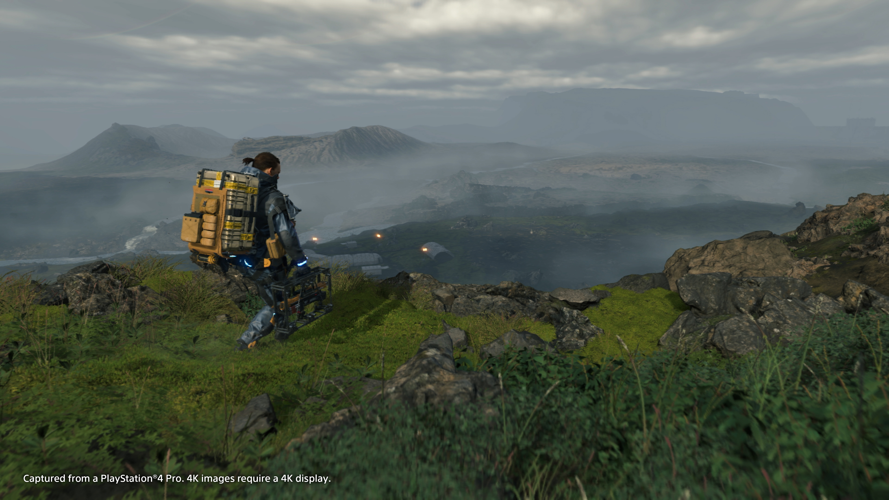
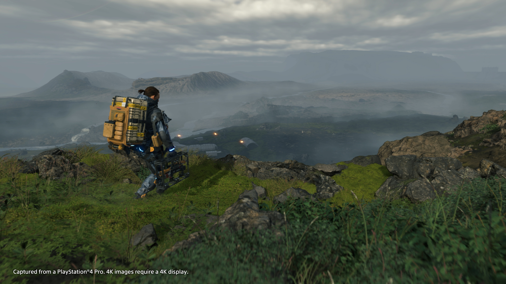
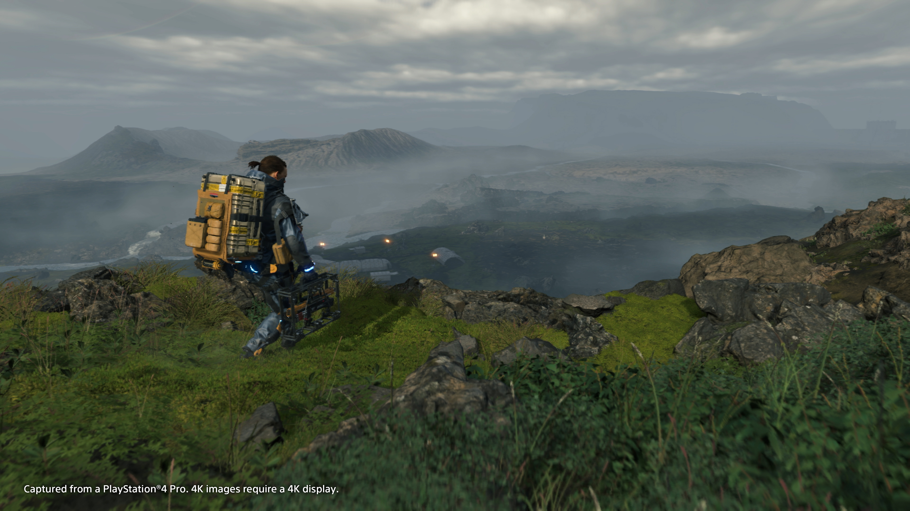

Es un videojuego de acción y aventura desarrollado por Kojima Porductions y publicado por Sony Interactive Entertaiment. El juego representa una narrativa compleja y atmosférica que gira en torno a Sam Porter Brigdes, interpretado por Norman Reedus, quien debe atravesar un paisaje postapocalíptico en un mundo devastado por un evento catastrófico conocido como "Death Stranding". El juego explora temas de conexión, aislamiento y la importancia de la solidaridad en un mundo fracturado.
La jugabilidad de "Death Stranding"se centra en la entrega de bienes a través de un vasto y peligroso terreno, que incluye montañas, ríos y zonas contaminadas por una minsteriosa sustancia llamada "chiracles". Los jugadores deben navegar por estos entornos utilizando una variedad de herramientas y dispositivos, incluyendo una mochilla de carga especial y equipo de escalada. Este titulo recibió críticas mixtas a positivias por parte de la crítica y la audiencia. Algunos elogiaron su narrativa y diseño visual, mientras que otros encontraron que su jugabilidad era polarizante y que la entrega de paquetes podía volverse repetitiva. Sin embargo, muchos eligieron su ambición y originalidad en un mercado saturado de secuelas y franquicias establecidas.
